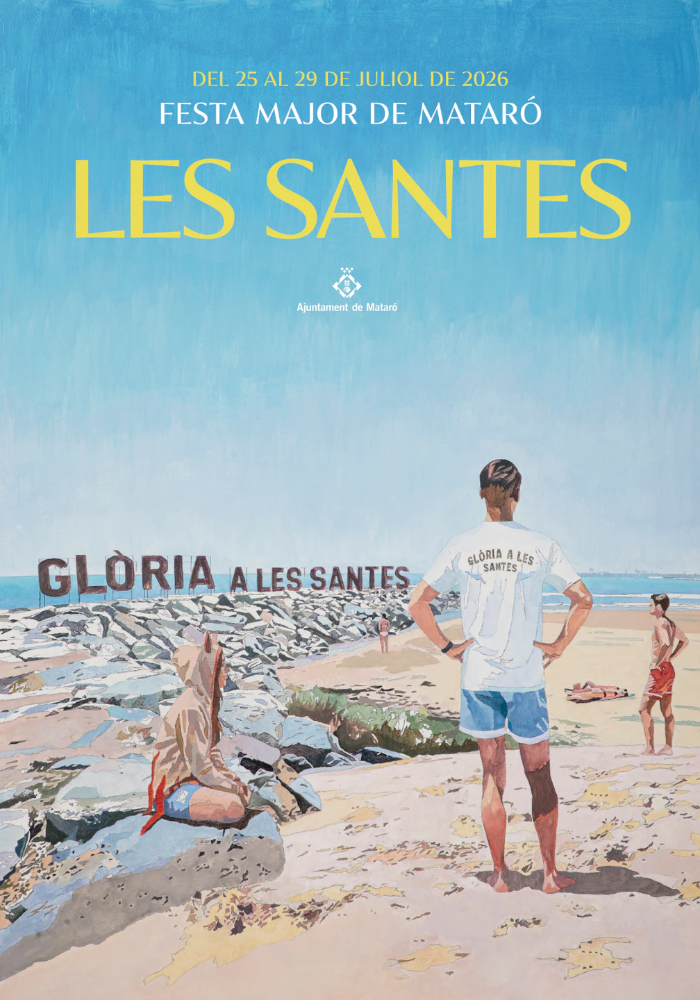

Tradició, foc i música en estat pur.
Les Santes
La Festa Major de Mataró
25 – 29 de juliol 2026
Connecta't a la Festa en temps real
Carregant actes…
Tradició, foc i música en estat pur.
Les Santes
La Festa Major de Mataró
Les Santes són la Festa Major de Mataró, celebrada cada any a finals de juliol en honor a les patrona de la ciutat, Santa Juliana i Santa Semproniana. Durant diversos dies, la ciutat s'omple de cultura popular, música, foc i tradicions amb actes emblemàtics com cercaviles, gegants, correfocs i concerts, convertint-se en una de les festes més destacades de Catalunya.